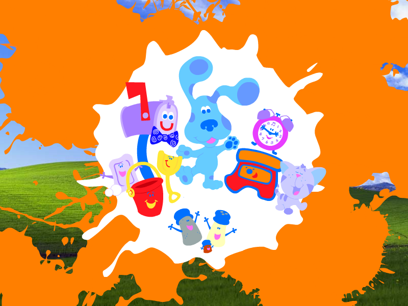
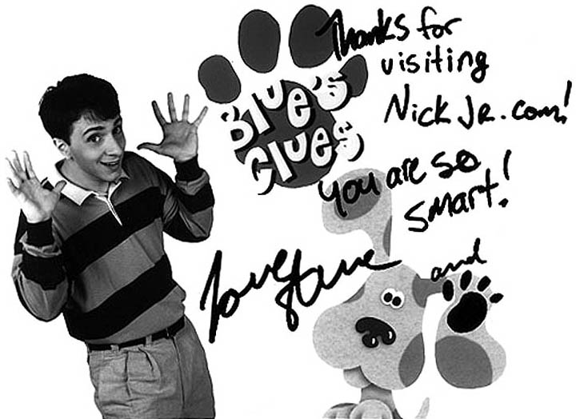
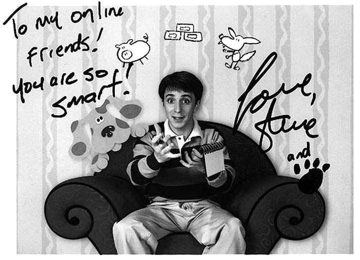

Blue's Clues Screensavers
Blue's Clues - Blau und schlau Screensaver (nickjr.de)

DOWNLOAD
.exe file zipped (2.23 MB)
Blue's Clues Signatures



 .exe file zipped (2.23 MB)
.exe file zipped (2.23 MB)